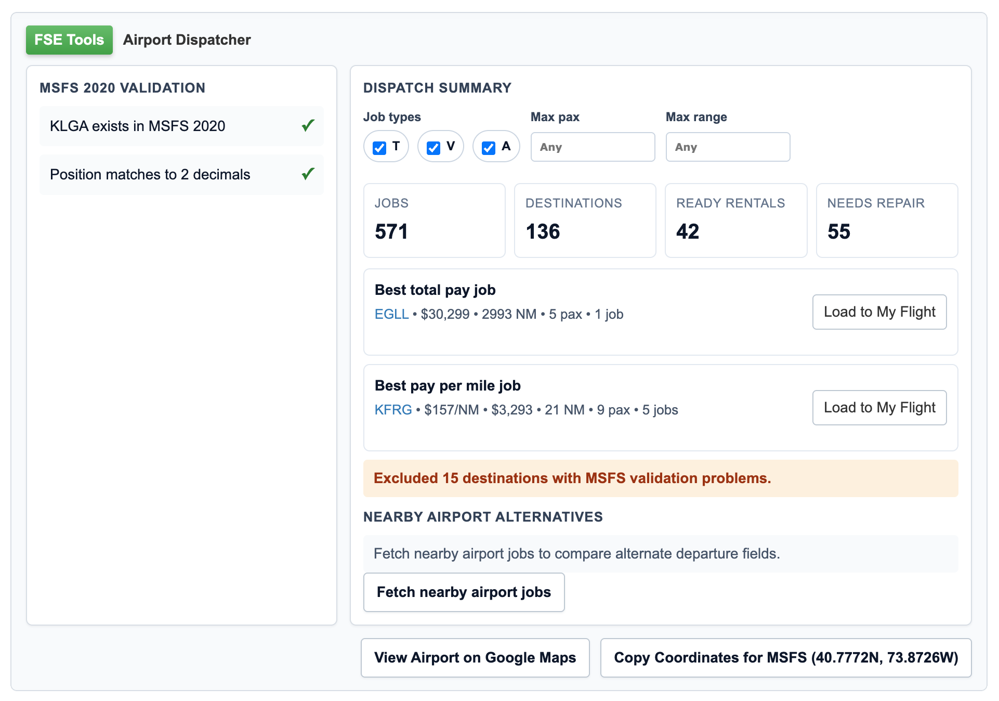

Airport Dispatcher
Bring nearby assignments, aircraft context, and map links into one compact panel.
Unofficial FSEconomy companion
FSE Tools is a Tampermonkey userscript with unofficial enhancements for the FSEconomy web interface. It
helps with airport dispatch, planning, and flight workflow on
server.fseconomy.net without taking over the site. It is open source and free.
Bring nearby assignments, aircraft context, and map links into one compact panel.
Create a SimBrief dispatch directly from your current My Flight details.
Compare FSEconomy airport data with MSFS coordinates before a mismatch becomes a problem.
What is FSE Tools?
FSE Tools is not meant to overhaul FSEconomy or replace its normal workflow. It adds focused tools on top of the existing pages so it is easier to evaluate assignments and plan a more suitable flight.
The airport dispatcher view is a good example. It brings the available jobs and aircraft into a more useful layout, helping you scan options faster while still working within the original FSEconomy page.

Install
https://server.fseconomy.net/, sign in, and confirm FSE Tools is visible.
Open project
I built this project as an FSEconomy user who wanted better tools for the parts of the site I use most. It is an unofficial project with no affiliation to FSEconomy. If you want to inspect how it works, browse the repository. If something is broken or unclear, report it there.